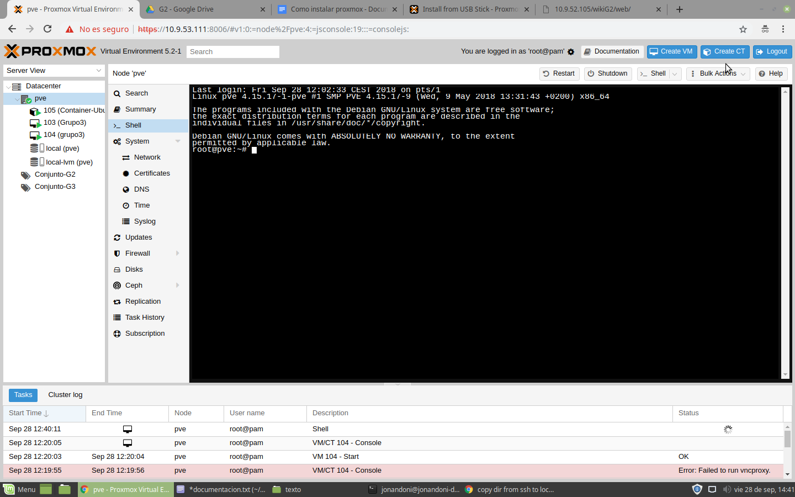

Como crear un contenedor:
 En Proxmox podemos crear dos cosas:
1. Máquinas Virtuales KVM. Se crean a partir de una ISO.
2. Contenedores.
A partir de la versión 4.x se utilizan contenedores LXC. Se crean a partir de una plantilla de contenedor. Estas plantillas pueden descargarse directamente desde los repositorios de plantillas de Proxmox.
Para crear un contenedor vamos al nodo (servidor) que nos interesa y damos a createCT. Aquí rellenamos hostname con el nombre que queremos dar a nuestro contenedor, en recursos asignamos nuestro grupo,que está formado por nuestros usuarios en proxmox, ponemos una contraseña y aceptamos (el usuario será por defecto root).
En el siguiente paso elegimos la plantilla que previamente descargamos desde el almacenamiento local de nuestro nodo y aceptamos. Después elegimos el disco en el que se instalará y el tamaño que se le asignará y aceptamos. Después asignamos el número de núcleos y aceptamos.
Después elegimos la memoria y aceptamos.Después asignamos la configuración de red para acceder desde un navegador externo. Luego asignamos el servidor DNS y finalmente confirmamos.